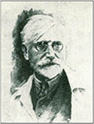
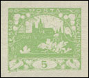
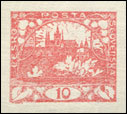
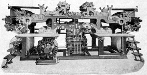

Sbírám HradčanyCollecting Hradčany
Web o první československé známkové emisi — o pěti kresbách, dvaceti šesti hodnotách, tiskových deskách a všem, co se při jejich výrobě v letech 1918–1920 přihodilo. Hodnota 15h má vlastní, podrobnější specializovaný web.A site about the first Czechoslovak stamp issue — its five designs, twenty-six values, printing plates and everything that befell them in the making between 1918 and 1920. The 15h value has its own, more detailed specialised site.
Z historie emiseFrom the history of the issue
Kolem prvních československých známek koluje spousta historek, které se opakováním posunuly někam jinam. Od jejich vzniku uplynulo přes sto let — tady je shrnuté to, co je doložené.A good many stories circulate about the first Czechoslovak stamps, and repetition has carried some of them a long way from the facts. More than a century has passed since they appeared; what follows is what is documented.

Podle záznamů KČF se vedení klubu 8. listopadu 1918 obrátilo na profesora Alfonse Muchu, aby vypracoval návrhy prvních československých známek.According to the records of the Czech Philatelic Club, on 8 November 1918 its board approached professor Alfons Mucha with a request for designs for the first Czechoslovak stamps.Podle vzpomínek vrchního poštovního oficiála Jaroslava Lešetického ho ale už 29. října 1918 pověřil poštovní ředitel Maxmilián Fatka, aby obstaral kresbu přetisku „Zatímní vláda 28. 10. 1918“ pro rakouské známky. Ten návrh byl odmítnut a od přetisku se oficiálně upustilo. Hned následující den dostal Lešetický druhý úkol — sehnat návrhy na zatímní známky.Yet by the recollection of the senior postal official Jaroslav Lešetický, as early as 29 October 1918 the postal director Maxmilián Fatka charged him with obtaining a design for an overprint reading “Provisional Government 28 Oct 1918” for use on Austrian stamps. That proposal was rejected and the overprint officially abandoned. The very next day Lešetický was given a second task — to find designs for provisional stamps.
1. listopadu 1918, cestou z tiskárny Unie, navrhl ministerský rada Viliam Elias Lešetickému jako motiv prvních známek Hradčany. Poštovní presidium návrh schválilo a druhý den bylo Muchovi zadáno, aby Hradčany vykreslil. Tiskem byla pověřena Česká grafická unie v Praze — podnik, který vznikl roku 1903 sloučením České grafické společnosti Unie s reprodukční dílnou Jana Vilíma.On 1 November 1918, walking back from the Unie printing works, ministerial counsellor Viliam Elias suggested to Lešetický that Prague Castle (Hradčany) be the motif of the first stamps. The postal presidium approved it, and the next day Mucha was commissioned to draw the Castle. Printing was entrusted to the Czech Graphic Union in Prague — a firm formed in 1903 by the merger of the Czech Graphic Society Unie with Jan Vilím’s reproduction workshop.
3. listopadu odevzdal Mucha návrhy s Hradčany, s husitou, se sokolem a s dívkou v kroji. První hradčanské známky — 5 h světle zelená a 10 h červená — vyšly 18. prosince 1918 a ten den se stal pamětním dnem československé filatelie. Hodnoty pak nevycházely popořadě, ale napřeskáčku; poslední, 30 h světle fialová, až 12. dubna 1920.On 3 November Mucha handed in designs showing the Castle, a Hussite, a falcon and a girl in folk costume. The first Hradčany stamps — the 5 h light green and the 10 h red — appeared on 18 December 1918, a date that became the commemorative day of Czechoslovak philately. The values did not then appear in order of face value but out of sequence; the last of them, the 30 h light violet, only on 12 April 1920.


Celá emise se skládá z pěti různých kreseb a 26 hodnot, z nichž 14 vyšlo i v zoubkované úpravě.The issue as a whole comprises five different designs and 26 values, fourteen of which also appeared perforated.
Pět kreseb emiseThe five designs
Moje oblíbená hodnota — 15hMy favourite value — the 15h
Z celé emise se soustavně věnuji hodnotě 15 h cihlově červené. Je to nejvariabilnější známka emise a pro specialistu vděčnější než kterákoli jiná: sedm tiskových desek, pět katalogizovaných odstínů, osm skupin úředního zoubkování plus dvě výjimečná — a jako jediná hodnota emise je zastoupena ve všech osmi skupinách.Of the whole issue it is the 15 h brick red I work on systematically. It is the most varied stamp of the issue and more rewarding to a specialist than any other: seven printing plates, five catalogued shades, eight groups of official perforation plus two exceptional ones — and it is the only value represented in all eight groups.
Proto má vlastní web. Najdete na něm rekonstrukce všech sedmi desek se stem polí, komparátor známkových polí, statistiky z rozboru přes 21 tisíc známek, mapu razítek, výklad knihtisku, oddíl výrobních vad a zkusmé tisky.That is why it has a site of its own. There you will find reconstructions of all seven plates with their hundred fields, a field comparator, statistics from an analysis of over 21,000 stamps, a cancellation map, an account of letterpress printing, a section on production flaws, and proofs.
Výroba známekHow the stamps were made
Výroba prvních československých známek nese stopy poválečného chaosu. Tiskárna České grafické unie na známkovou výrobu připravená nebyla a její knihtiskové stroje byly zastaralé. Vzniklo tak množství tiskových vad a odchylek — a s nimi ráj pro specialistu.The making of the first Czechoslovak stamps bears the marks of post-war disorder. The Czech Graphic Union works was not equipped for stamp production and its letterpress machines were out of date. The result was a wealth of printing flaws and varieties — and with them a paradise for the specialist.

Muchova kresba musela nejdřív dostat podobu tisknoucího reliéfu. Z hotového prvku se pak sestavila tisková forma o sto známkových polích — tedy sto jednotlivých obrazů vedle sebe, nikoli jeden obraz stokrát. Právě odtud vyrůstá celá dnešní specializace: cokoli se mezi těmi sty prvky liší, liší se pořád a na stejném místě.Mucha’s drawing first had to be turned into a printing relief. From the finished element a printing forme of one hundred stamp fields was assembled — a hundred individual images side by side, not one image a hundred times over. The whole of today’s specialisation grows from that: whatever differs among those hundred elements differs always, and in the same place.
Z toho plyne rozdělení, které se táhne celým webem. Odchylka vázaná na konkrétní známkové pole je desková vada — opakuje se na každém archu z téže desky a slouží k určení pozice i desky. Odchylka vázaná na jeden konkrétní arch nebo jeden průchod strojem je výrobní vada — je náhodná a neopakuje se.From this comes the division that runs through the whole site. A deviation tied to a particular stamp field is a plate variety — it recurs on every sheet from that plate and serves to identify both position and plate. A deviation tied to one particular sheet or one pass through the machine is a production flaw — random, and non-recurring.
Jak knihtisk pracuje, jaké odchylky plodí a proč je to pro sběratele spíš dar než potíž, rozebírá stránka Knihtisk na webu 15h. Technický popis výroby tiskových desek vychází z Monografie československých známek č. 1.How letterpress works, what deviations it produces and why that is a gift to the collector rather than a nuisance is set out on the Letterpress page of the 15h site. The technical description of plate making draws on the Monograph of Czechoslovak Stamps No. 1.